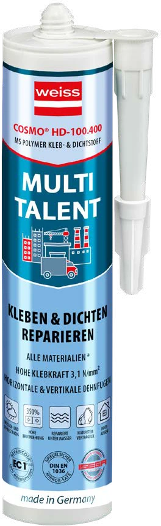

Colle-mastic à base de polymère MS. Adhère, étanche et répare sur presque tous les matériaux, à l'intérieur comme à l'extérieur.

Idéal pour coller miroirs, verre, métaux (fer, aluminium, acier), bois, béton, pierre naturelle, céramique, polycarbonate, PVC, PMMA et plâtre. Sauf PP, PE et PTFE.
Conditionnement : cartouche 310 ml et poche 600 ml · teintes blanc et gris.
Cliquez sur un métier pour agrandir la planche d'applications.
Tarifs professionnels, quantités et livraison dans votre wilaya : nous vous répondons rapidement.